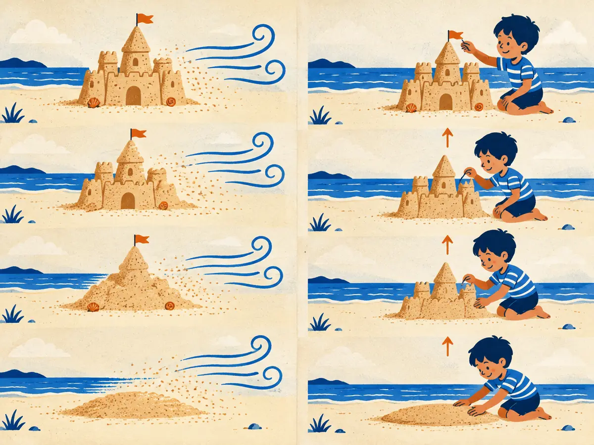

Diffusion from scratch
Almost every image generator you have used since 2022 rests on one strange idea: learn to make pictures by learning to remove noise. Ruin the data a little at a time, train a network to undo one small step, then run it backwards from pure static.
By the end you can
- Write the forward process $q(x_t \mid x_0)$ and compute a noised value with $\bar\alpha_t$.
- Explain the DDPM training objective (predict the noise) and the sampling loop.
- Connect the noise prediction to the score and Langevin dynamics, and say what DDIM changes.
Guess first. A wrong guess now makes the right answer stick.
A diffusion model is trained on photos. During training, what is the network actually asked to output?
- A whole new photo, from nothing
- A yes/no verdict on whether a photo is real
- The noise that was mixed into a noisy version of a training photo
- A short text caption of the photo
The original 2020 recipe generates one image in how many network calls?
- 1
- About 1,000
- One per pixel
- One per training image
Why diffusion: build by destroying
By 2019, image generation had two main families, and each had a weakness. VAEs (Kingma & Welling, 2013; lesson G1.1) train stably but give blurry samples. GANs (Goodfellow et al., 2014; G1.2) give sharp samples but are notoriously unstable to train and prone to mode collapse, covering only part of the data.
A third idea had been sitting quietly since 2015. Sohl-Dickstein et al., borrowing from non-equilibrium physics, proposed: destroy the structure in data slowly, by adding a little noise many times, then learn to reverse each small step. Each reverse step is a small, nearly Gaussian correction, which a neural network can learn with an ordinary regression loss. No adversary, no balancing act.
It took five years to make it work well. DDPM (Ho, Jain & Abbeel, 2020, "Denoising Diffusion Probabilistic Models") simplified the training into "predict the noise" and reached an FID of 3.17 on CIFAR-10, competitive with the best GANs. A year later, Dhariwal & Nichol (2021) published "Diffusion Models Beat GANs on Image Synthesis". Stable Diffusion, DALL·E 2 and Imagen followed in 2022, and as of 2026 nearly all leading image and video generators are diffusion models or their close cousin, flow matching (G1.5).
The trade-off: generating is slow. Instead of one network call (a GAN), you make many, one per denoising step. Much of the research since 2020 has been about cutting that number.
Explain like I'm 5

The wind blows on a sandcastle. Bit by bit the towers slump, until there is just a flat pile of sand. Blowing it flat is easy: the wind needs no skill at all.
Next to it, a little sculptor practises the opposite. She looks at a slightly blown castle and learns how to put back the bit the wind took. After watching thousands of castles blow away, she can start from a flat pile and pat, pat, pat, one small fix at a time, until a castle stands there.
Where the story breaks: she doesn't rebuild the same castle. Starting from a different pile gives a brand-new castle, which is exactly what we want from a generator.
What made diffusion attractive compared with GANs?
- It generates an image in a single network call
- Training is a stable regression problem (predict the noise), with no adversary to balance
- It needs no training data
- It produces blurrier but faster samples
The forward process, in one jump
Pick a data point $x_0$ (an image, flattened into a long vector). The forward process adds a little Gaussian noise at each of $T = 1000$ steps:
$$q(x_t \mid x_{t-1}) = \mathcal{N}\!\left(\sqrt{1-\beta_t}\,x_{t-1},\; \beta_t I\right)$$$\beta_t$ is the noise schedule: how much fresh noise step $t$ adds. DDPM uses a linear schedule from $\beta_1 = 10^{-4}$ to $\beta_{1000} = 0.02$. The $\sqrt{1-\beta_t}$ shrinks the old value slightly, so the total variance stays about 1 instead of growing.
Because a sum of independent Gaussians is Gaussian (P5.1), all those small steps collapse into one jump. Define $\alpha_t = 1 - \beta_t$ and the running product $\bar\alpha_t = \alpha_1 \alpha_2 \cdots \alpha_t$. Then
$$q(x_t \mid x_0) = \mathcal{N}\!\left(\sqrt{\bar\alpha_t}\,x_0,\; (1-\bar\alpha_t) I\right) \quad\Longleftrightarrow\quad x_t = \sqrt{\bar\alpha_t}\,x_0 + \sqrt{1-\bar\alpha_t}\,\varepsilon,\;\; \varepsilon \sim \mathcal{N}(0, I)$$$\bar\alpha_t$ is the share of the original signal's variance still left at step $t$; $1-\bar\alpha_t$ is the share that is now noise. With the linear schedule, $\bar\alpha_{100} \approx 0.897$, $\bar\alpha_{250} \approx 0.524$, $\bar\alpha_{500} \approx 0.079$ and $\bar\alpha_{1000} \approx 0.00004$: by the end essentially nothing of $x_0$ survives, and $x_T$ is plain $\mathcal{N}(0, I)$ noise.
Worked example
One pixel with value $x_0 = 1.0$ (images are scaled to $[-1, 1]$), at $t = 250$, with noise draw $\varepsilon = -0.5$. We know $\bar\alpha_{250} \approx 0.524$.
- Signal weight: $\sqrt{0.524} \approx 0.724$
- Noise weight: $\sqrt{1 - 0.524} = \sqrt{0.476} \approx 0.690$
- $x_{250} = 0.724 \times 1.0 + 0.690 \times (-0.5) = 0.724 - 0.345 = 0.379$
Pixel $x_0 = 0.8$, step $t = 500$ where $\bar\alpha_{500} \approx 0.0786$, noise draw $\varepsilon = 1.0$.
- Signal weight $\sqrt{\bar\alpha_{500}} \approx$
- Noise weight $\sqrt{1-\bar\alpha_{500}} \approx$
- $x_{500} \approx$ (the noise now dominates)
Why can training jump straight from $x_0$ to any $x_t$ without simulating the steps in between?
- Because $\beta_t$ is the same at every step
- Because the network learns the shortcut
- Because $x_T$ is always exactly zero
- Because chained Gaussian noise steps add up to one Gaussian, $\mathcal{N}(\sqrt{\bar\alpha_t}\,x_0, (1-\bar\alpha_t)I)$
Training and sampling
To run the process backwards we need, at every step, a good guess of which noise was mixed in. So we train a network $\varepsilon_\theta(x_t, t)$ to predict it. Ho et al. derived the objective from a variational bound (the same ELBO idea as a VAE, with a fixed, non-learned encoder) and found that a simple unweighted version works best:
$$\mathcal{L}_{\text{simple}} = \mathbb{E}_{x_0,\,t,\,\varepsilon}\Big[\big\|\,\varepsilon - \varepsilon_\theta\big(\sqrt{\bar\alpha_t}\,x_0 + \sqrt{1-\bar\alpha_t}\,\varepsilon,\; t\big)\big\|^2\Big]$$In words: the squared error between the true noise $\varepsilon$ and the network's guess, averaged over training images $x_0$, random steps $t$ and random noise draws $\varepsilon$. One training step is:
- Take a batch of training images $x_0$.
- For each, draw a step $t$ uniformly from $1 \dots 1000$ and noise $\varepsilon \sim \mathcal{N}(0, I)$.
- Make $x_t = \sqrt{\bar\alpha_t}\,x_0 + \sqrt{1-\bar\alpha_t}\,\varepsilon$ in one jump.
- Predict $\hat\varepsilon = \varepsilon_\theta(x_t, t)$ and compute $\|\varepsilon - \hat\varepsilon\|^2$.
- Backpropagate and take an optimizer step (Adam in the original paper).
The step $t$ is fed in through a time embedding: the same sinusoidal encoding transformers use for positions (M1.3), passed through a small MLP and added inside every block. One network thus learns to denoise at every noise level, from "barely touched" to "pure static".
Predicting $\varepsilon$ is one of several equivalent choices. Knowing $\hat\varepsilon$ gives you a guess of the clean image, $\hat x_0 = (x_t - \sqrt{1-\bar\alpha_t}\,\hat\varepsilon)/\sqrt{\bar\alpha_t}$, so some models predict $x_0$ directly, and many recent ones predict a mix called the velocity $v$ (Salimans & Ho, 2022). The choice changes how errors are weighted across noise levels, not what is learned.
Sampling, and the score view
To generate, start from pure noise $x_T \sim \mathcal{N}(0, I)$ and step down from $t = 1000$ to $t = 1$:
$$x_{t-1} = \frac{1}{\sqrt{\alpha_t}}\left(x_t - \frac{\beta_t}{\sqrt{1-\bar\alpha_t}}\,\varepsilon_\theta(x_t, t)\right) + \sigma_t\, z, \qquad z \sim \mathcal{N}(0, I)$$The bracket removes the small slice of predicted noise that belongs to this step, and $1/\sqrt{\alpha_t}$ undoes the forward shrink. Then $\sigma_t z$ adds back a little fresh noise (DDPM uses $\sigma_t^2 = \beta_t$, and $z = 0$ on the last step). That's 1,000 network calls per image, which is why the original DDPM was slow.
The score view. At about the same time, Song & Ermon (2019) attacked generation from another angle. They trained a network to estimate the score $\nabla_x \log p_t(x)$, the direction in which the noisy data density rises fastest, at many noise levels. Then they sampled with Langevin dynamics (P5.3), whose basic step is
$$x \leftarrow x + \tfrac{\eta}{2}\,\nabla_x \log p(x) + \sqrt{\eta}\,z$$which climbs the density while jiggling with noise, annealing from large noise to small. The two views turn out to be one: for Gaussian noising, the score is the predicted noise rescaled,
$$\nabla_x \log p_t(x_t) \approx -\frac{\varepsilon_\theta(x_t, t)}{\sqrt{1-\bar\alpha_t}}$$"Remove the predicted noise" and "step uphill on the density" are the same move. Song et al. (2021) unified both as stochastic differential equations: noising is an SDE, sampling solves its time-reversed SDE, and there is also a deterministic probability-flow ODE with the same marginals. That ODE view sets up DDIM below and flow matching in G1.5.
How is the network's noise prediction related to the score $\nabla_x \log p_t(x_t)$?
- They are unrelated; scores need a separate network
- The score equals $+\varepsilon_\theta$ exactly, with no scaling
- The score is about $-\varepsilon_\theta / \sqrt{1-\bar\alpha_t}$: the predicted noise points away from the data
- The score is the clean image $x_0$
Fewer steps, and the network inside
DDIM (Song, Meng & Ermon, 2020, "Denoising Diffusion Implicit Models") keeps the trained network and changes only the sampler. At each step it forms the clean-image guess $\hat x_0$ and jumps straight to an earlier step $t'$, re-using the predicted noise instead of drawing fresh noise:
$$x_{t'} = \sqrt{\bar\alpha_{t'}}\;\hat x_0 + \sqrt{1-\bar\alpha_{t'}}\;\hat\varepsilon, \qquad \hat x_0 = \frac{x_t - \sqrt{1-\bar\alpha_t}\,\hat\varepsilon}{\sqrt{\bar\alpha_t}}$$Because nothing random is added, the same starting noise always gives the same image, and the steps can be large: the paper reports samples of similar quality 10 to 50 times faster in wall-clock time. Later ODE solvers such as DPM-Solver (Lu et al., 2022) brought typical counts to roughly 10–30 steps, and distillation (G1.5) goes down to 1–4.
The network inside was, for years, a U-Net (Ronneberger et al., 2015, originally for medical image segmentation). Its encoder half shrinks the image through convolution blocks (P6.1) into coarse, wide feature maps; its decoder half grows them back to full size, with skip connections carrying fine detail across. The output has exactly the input's shape, which is what a noise predictor needs. DDPM's U-Net added residual blocks, group normalization, self-attention at the 16×16 resolution, and the time embedding inside every block.
Two problems remained. Running a U-Net on every pixel of a 512×512 image, dozens of times, is expensive; G1.4 moves diffusion into a compressed latent space. And U-Nets scale less predictably than transformers; G1.6 swaps them for diffusion transformers.
What does DDIM change compared with DDPM?
- It trains a new network with a different loss
- Only the sampler: it reuses the same trained network but takes deterministic, larger jumps
- It replaces the U-Net with a transformer
- It adds more noise per step so the image forms faster
Explain to a friend how a diffusion model is trained and how it then makes a brand-new image.
With the linear schedule ($10^{-4}$ to $0.02$, $T = 1000$), roughly how much of the signal's variance is left at the final step, $\bar\alpha_{1000}$?
- About 0.5
- About 0.00004: essentially none
- About 0.02
- Exactly 1
In the DDPM sampling update, what is the role of the term $\sigma_t z$?
- It removes the predicted noise
- It encodes the time step
- It undoes the forward shrinking by $\sqrt{\alpha_t}$
- It injects a little fresh noise, making each step stochastic like a Langevin step
From P5.3: Langevin dynamics samples from $p(x)$ by repeating $x \leftarrow x + \tfrac{\eta}{2}\nabla_x \log p(x) + \sqrt{\eta}\,z$. What does a diffusion model supply to make this work on images?
- An estimate of the score $\nabla_x \log p_t(x)$ at every noise level, from the noise predictor
- The exact density $p(x)$ of natural images
- A discriminator that scores realism
- A codebook of image tokens
Why is the U-Net a natural fit for a noise predictor?
- It outputs a single number per image
- It has no convolutions, so it is cheap
- Its output has the same shape as its input, and skip connections keep fine detail while the bottleneck sees the big picture
- It is the only architecture that accepts a time step
Key takeaways
- Forward process: $x_t = \sqrt{\bar\alpha_t}\,x_0 + \sqrt{1-\bar\alpha_t}\,\varepsilon$, with $\bar\alpha_t$ falling from 1 to about $4\times10^{-5}$ over 1,000 steps.
- Training is regression: predict the added noise, loss $\|\varepsilon - \varepsilon_\theta(x_t, t)\|^2$, at random $t$.
- Sampling starts from pure noise and removes predicted noise step by step; DDPM adds fresh noise each step, DDIM doesn't and needs far fewer steps.
- The noise predictor is a rescaled score, so diffusion sampling is a cousin of Langevin dynamics.
Build a DDPM on the two-moons toy in PyTorch: the schedule, one-jump noising, a small MLP noise predictor with a time embedding, training, and the 1,000-step sampling loop. Trains in well under a minute on a CPU.
Add this lesson's cards to your spaced-review deck.